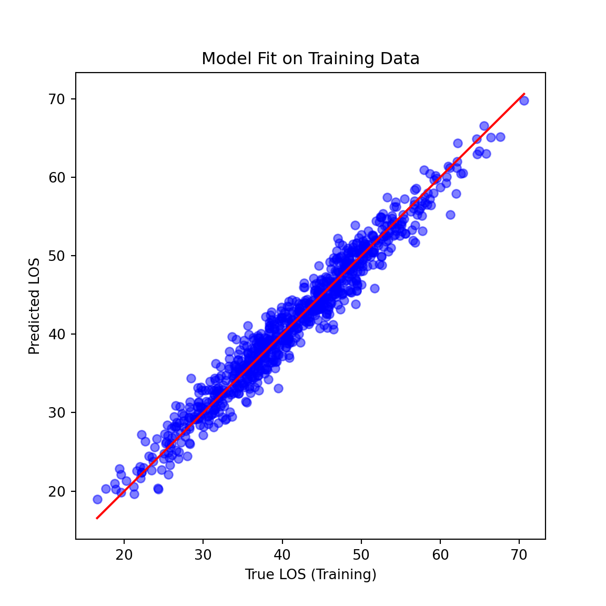
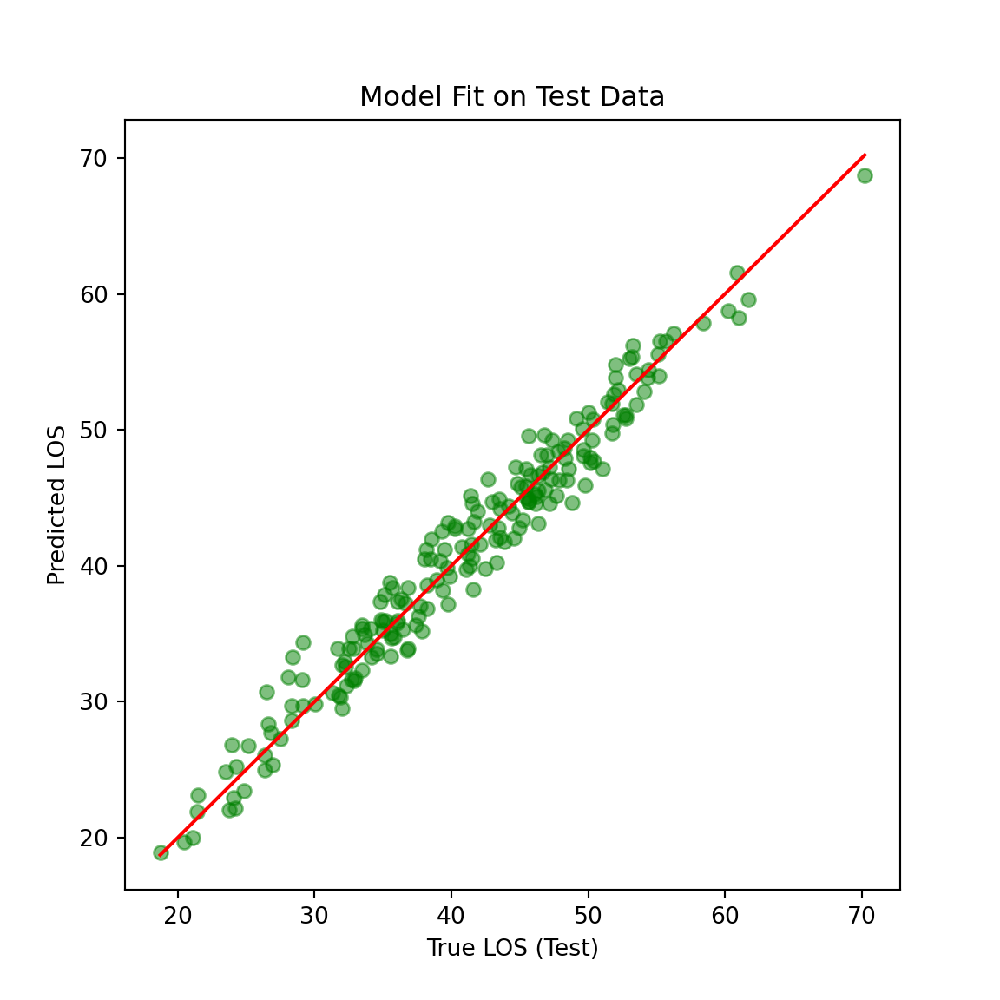
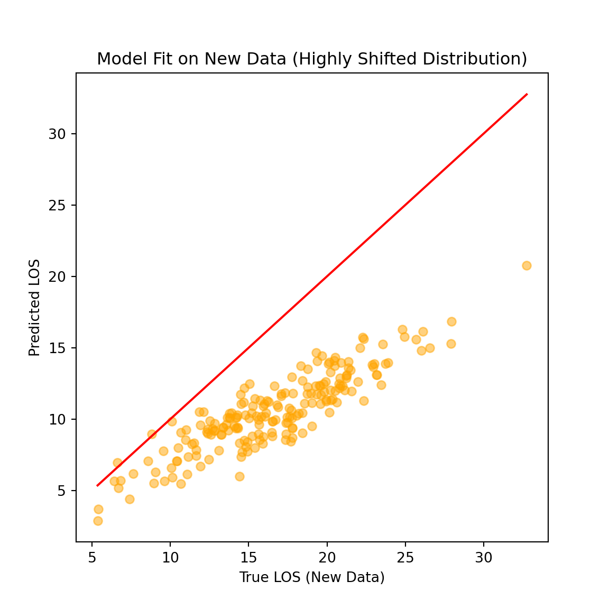

library(reticulate)
# one-off setup (if you haven't done it yet)
# install_miniconda()
##conda_create(
## envname = "hds-python",
## python_version = "3.11",
## packages = c("numpy", "pandas", "matplotlib", "seaborn", "scikit-learn")
##)
use_condaenv("hds-python", required = TRUE)
#py_config()
#conda_install("hds-python", c("jupyter", "plotly"))ML pipeline Python
- Dataset
- Splitting into train and test sets
- Fitting linear regression algorithm in train (for more examples -scikit-linear reg
- Evaluating algorithm in both train and test sets (compare predictions to true labels through metric RMSE) -scikit-RMSE
As an extra:
- What happens if now we have a very different dataset? (pandemic has happened and we now have much younger patients coming in). The model no longer holds and we can detect it by comparing the evaluation metrics.
# Import necessary libraries
import numpy as np
import pandas as pd
import matplotlib.pyplot as plt
from sklearn.model_selection import train_test_split
from sklearn.linear_model import LinearRegression
from sklearn.metrics import mean_squared_error# Set seed for reproducibility
np.random.seed(42)# Generate initial healthcare data
age = np.random.normal(60, 15, 1000) # Patient age
severity = np.random.uniform(1, 10, 1000) # Illness severity score (1-10)
noise = np.random.normal(0, 2, 1000) # Random noise
LOS = 0.5 * age + 2 * severity + noise # Linear relationship - normally would not have this! THis is what we are trying to find out!
# Create a DataFrame
data = pd.DataFrame({'Age': age, 'Severity': severity, 'LOS': LOS})# Split data into training and test sets
train, test = train_test_split(data, test_size=0.2, random_state=42)# Define and fit a linear regression model
model = LinearRegression()
model.fit(train[['Age', 'Severity']], train['LOS'])LinearRegression()In a Jupyter environment, please rerun this cell to show the HTML representation or trust the notebook.
On GitHub, the HTML representation is unable to render, please try loading this page with nbviewer.org.
Parameters
| fit_intercept | True | |
| copy_X | True | |
| tol | 1e-06 | |
| n_jobs | None | |
| positive | False |
# Predict on training and test sets
train_preds = model.predict(train[['Age', 'Severity']])
test_preds = model.predict(test[['Age', 'Severity']])# Calculate RMSE for training and test sets
mse_train = mean_squared_error(train['LOS'], train_preds)
mse_test = mean_squared_error(test['LOS'], test_preds)
print(f"RMSE on Training Set: {mse_train:.2f}")RMSE on Training Set: 3.82print(f"RMSE on Test Set: {mse_test:.2f}")RMSE on Test Set: 3.40# Simulate a more extreme shift in the data distribution
# Much younger patients with almost negligible severity scores
age_new = np.random.normal(20, 5, 200) # Significantly younger patients
severity_new = np.random.uniform(0.1, 1, 200) # Minimal severity
noise_new = np.random.normal(0, 2, 200)
LOS_new = 0.8 * age_new + 1.3 * severity_new + noise_new #Different underlying model!
# Create a new DataFrame with shifted data
new_data = pd.DataFrame({'Age': age_new, 'Severity': severity_new, 'LOS': LOS_new})# Predict on the new data
new_preds = model.predict(new_data[['Age', 'Severity']])# Calculate RMSE for the new, shifted data
mse_new = mean_squared_error(new_data['LOS'], new_preds)
print(f"RMSE on New Data (Highly Shifted Distribution): {mse_new:.2f}")RMSE on New Data (Highly Shifted Distribution): 43.01# Plot: Model Fit on Training Data
plt.figure(figsize=(6, 6))
plt.scatter(train['LOS'], train_preds, color='blue', alpha=0.5)
plt.plot([min(train['LOS']), max(train['LOS'])],
[min(train['LOS']), max(train['LOS'])], color='red')
plt.title('Model Fit on Training Data')
plt.xlabel('True LOS (Training)')
plt.ylabel('Predicted LOS')
plt.show()
# Plot: Model Fit on Test Data
plt.figure(figsize=(6, 6))
plt.scatter(test['LOS'], test_preds, color='green', alpha=0.5)
plt.plot([min(test['LOS']), max(test['LOS'])],
[min(test['LOS']), max(test['LOS'])], color='red')
plt.title('Model Fit on Test Data')
plt.xlabel('True LOS (Test)')
plt.ylabel('Predicted LOS')
plt.show()
# Plot: Model Fit on New Data (Shifted Distribution)
plt.figure(figsize=(6, 6))
plt.scatter(new_data['LOS'], new_preds, color='orange', alpha=0.5)
plt.plot([min(new_data['LOS']), max(new_data['LOS'])],
[min(new_data['LOS']), max(new_data['LOS'])], color='red')
plt.title('Model Fit on New Data (Highly Shifted Distribution)')
plt.xlabel('True LOS (New Data)')
plt.ylabel('Predicted LOS')
plt.show()